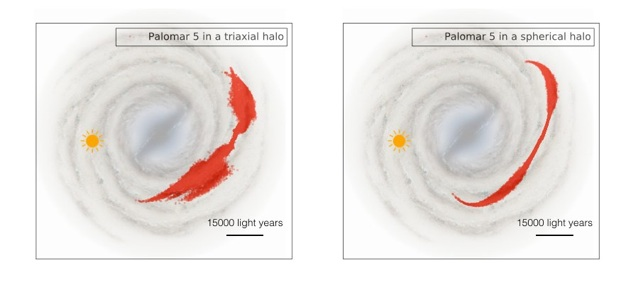

Stream-fanning of stellar tidal debris


Summary and key results: In Pearson et al. 2015, we modeled the globular cluster, Palomar 5 (Pal 5), within a three-component disk+bulge+triaxial dark matter halo potential using Streakline (Küpper et al. 2012) and N-body models, and found that the model streams formed large, two-dimensional “fans” of debris near the ends (top left), and that no physically reasonable progenitor orbit could reproduce the observed thinness and curvature of the Pal 5 stream. However, within a disk+bulge+spherical halo potential model streams that reproduced the observed morphology and radial velocities of Pal 5’s stream could easily be generated (top right). We conclude that there is no need for triaxiality in our Galactic halo within Pal 5’s orbit, and that existence and location of thin streams in our Galaxy (the lack of “stream-fanning”), can be used as a potential probe.
Link to press release on Columbia’s astronomy website >>
Link to article on ADS >>
Link to article on the arXiv >>
When Palomar 5 is modeled in a Milky Way potential with a triaxial dark matter halo its tidal streams show a peculiar morphology: they are “stream-fanned”.
When Palomar 5 is modeled in a Milky Way potential with a spherical dark matter halo its tidal streams are thin and trace the observed stellar stream of Palomar 5.